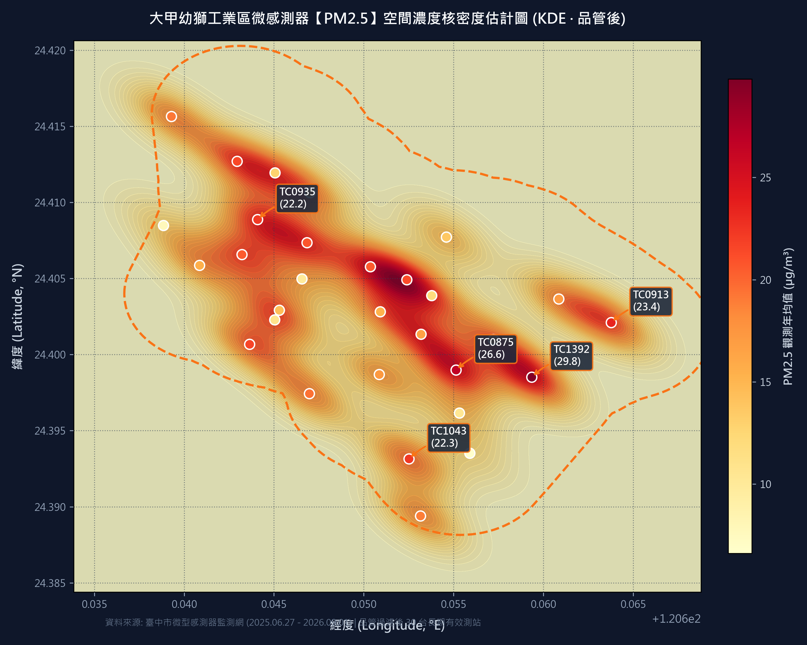
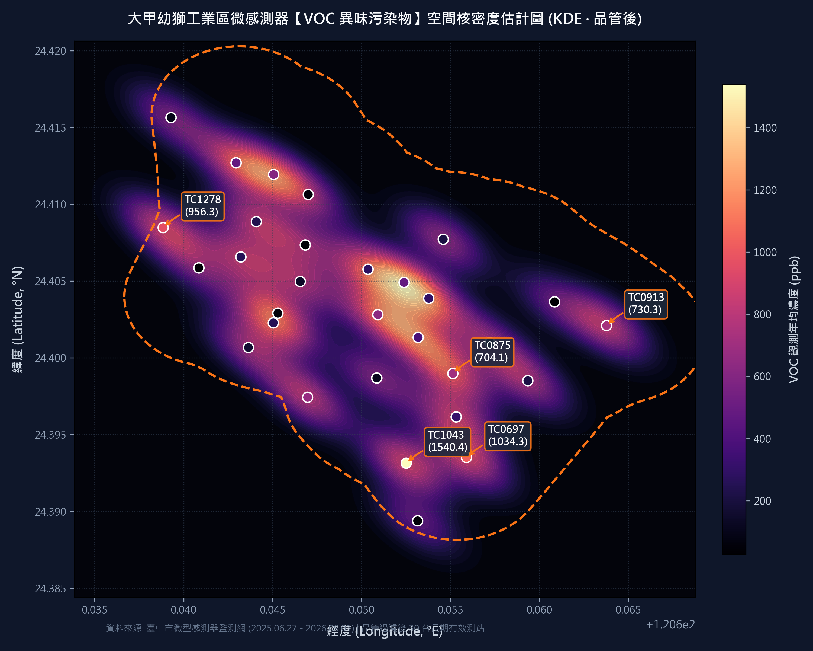

範圍內有效微感 vs 全臺中總量
31 / 範圍 35 (全臺中 1,381 台)
已品管剔除 4 台失效設備 (零值≥80%或死線)
全區異味最高測站 (常態長效熱點)
TC1043 (中山路二段)
年均 1,540.4 ppb / 警示(>200ppb)達 3,505 小時
稽查黃金曜日 (全週最高峰)
週三 ～ 週五
週五均值 514.7 ppb / P95 達 2,925 ppb 為全週之冠
建議突擊稽查黃金時段
04:30 ～ 06:30
深夜至清晨重度事件率達 16.7% (白天的 2.6 倍)
一、背景分析與核心挑戰
大甲幼獅工業區位於臺中市大甲區東北隅，為海線重要之金屬加工、表面處理、機械製造、塑膠射出及化工聚落。長期以來，周邊社區（日南里、幸福里、西岐里）屢屢陳情夜間及清晨傳出刺鼻酸臭、塑膠燃燒味與油漆溶劑異味，於近期民意與民間環保團體票選評比中，更被指名為臺中市「異味陳情最高熱區」之一。
⏱️ 計算單位特別聲明：為克服物聯網微型感測器每 1～2 分鐘即時頻率之微小瞬時微擾，本報告所有統計、排行、空間核密度 (KDE) 及時序特徵分析，統一採用標準「每小時平均值 (Hourly Mean)」作為核心計算單位，全期累積 273,400 筆標準觀測時數，嚴格要求單設備單日觀測筆數 ≤ 24 筆。
⚠️ 環保局傳統稽查痛點：為何民眾天天陳情，進廠卻抓不到？
- PM2.5 與異味脫節：傳統大氣測站多以 PM2.5 / PM10 作為指標，然而異味污染多由揮發性有機物 (VOCs) 與還原性硫化物引起，在低微粒濃度時依然氣味刺鼻，造成「空氣指標良好，居民卻聞到惡臭」的矛盾假象。
- 規避日間查緝的清晨偷排：違規業者常利用夜間 02:00～06:00 稽查人力空檔進行製程廢氣直排或防制設備停機，利用清晨大氣擴散差在短時間內排空。
- 缺乏空間關聯鐵證：微型感測器數據高達數十萬筆，過去欠缺空間核密度分析（KDE）與時段比對工具，難以說服廠商或作為鎖定特定街廓之執法依據。
二、大甲幼獅 31 台品管合格微感測器分佈地圖與監測清冊
大甲幼獅工業區 500m 緩衝區範圍內共佈建 35 台微感測器，經嚴格品管後鎖定 31 台具備有效分析價值之感測器。點擊地圖圓點標記可查看詳細指標，亦可點擊下方清冊項目連動地圖定位：
🗺️ 空間分佈地圖 (含大甲幼獅 500m 緩衝區邊界 · 31台有效測站)
● VOC > 1,000 ppb |
● 500 ~ 1,000 ppb |
● < 500 ppb |
--- 500m Buffer 邊界
| 序號 |
測站代碼 |
設備 ID |
所在位置 / 路段 |
經度 (°E) |
緯度 (°N) |
VOC 品管均值 (ppb) |
PM2.5 均值 (μg/m³) |
有效時數 / 屬性備註 |
地圖定位 |
三、空間核密度分析 (KDE Maps)：PM2.5 與 VOC 空間分佈對比
經品管過濾後，導入空間高斯核密度估計（Weighted Gaussian KDE）演算法，針對大甲幼獅 30 台長期有效微型感測器進行一整年觀測權重平滑運算。以下兩張高解析度核密度圖，直觀揭示了「顆粒物」與「異味揮發物」本質上的巨大差異：

常規微粒指標
圖 1：以 PM2.5 為主之空間濃度核密度圖 (品管後)
特徵解讀：全區 PM2.5 濃度梯度介於 6.6 ～ 26.6 μg/m³ 之間，呈現大範圍廣域平緩漸變特徵，微偏工業區東南至南側。這反映了 PM2.5 主要受區域背景大氣擴散與季風傳輸主導，無法有效鎖定工業區內個別工廠的非法偷排行為。

異味關鍵核心指標
圖 2：以 VOC (異味污染物) 為主之空間核密度圖 (品管後)
特徵解讀：VOC 空間呈現「極端局部島狀聚集」！全區背景值多低於 250 ppb，但在東南側邊界 (TC1043)、黎明路幸福里 (TC0697) 與西北順帆路 (TC1278) 出現極度陡峭的深色高濃度「紅爆熱點」（達 1,000~1,540 ppb），具備極高點源排放指紋！
🚨 空間核密度關鍵發現：東南側生活圈交界「異味重嫌確立」
比對圖 1 與圖 2 可清楚看出：TC1043 (東南隅中山路二段) 與 TC0697 (黎明路) 是全區長時序 VOC 濃度熱區的最核心震央。該熱區直接緊貼日南國小與住宅密集圈，精準印證了民意票選與異味陳情案件高度集中於該處的真實原因！
四、全時序異常頻率多維深度分析：精準鎖定稽查黃金出動契機
掌握污染空間熱區後，稽查大隊面臨最核心的戰術問題是：「究竟哪幾個月最嚴重？該選在週幾去查？一天之中的哪幾個小時出動最有把握抓到違規？」本模組針對 432 天數據進行「月均值 ➔ 曜日 ➔ 4小時時段」三層收斂分析：
4.1 第一層收斂：長時序月度均值變化（鎖定高污染月份）
下圖呈現 2025 年 6 月至 2026 年 9 月全區 30 台常態測站之每小時數據聚合月均值及重度污染事件率（>500 ppb 時數佔比）：
🔍 第一層分析結論：夏季至初秋（6月 ～ 9月）為全年度異味污染最高峰
- 高溫揮發劇烈：每年 6月 ～ 9月 全區 VOC 月均濃度達到最高峰（513.8 ～ 541.2 ppb），且重度污染事件率高達 14.6% ～ 17.0%，顯著高於冬季與春季（270 ～ 316 ppb，事件率約 9% ～ 11%）。
- 氣象與海陸風影響：夏季海風於午後深入陸地，傍晚轉為微弱陸風時常形成局部渦旋，致使有機溶劑與製程廢氣蓄積於大甲盆地邊界，此時期居民陳情最為強烈。
4.2 第二層收斂：高污染月份星期特徵分析（鎖定週幾去稽查最好）
針對污染最嚴重之月份（6月至10月），分析星期一至星期日（Day of Week）的濃度強度與重度事件發生頻率：
🎯 第二層分析結論：鎖定「週三至週五」（特別是週五）出動稽查效益最高！
- 週五為全週污染之冠：週五之平均 VOC 濃度達到全週最高之 514.7 ppb，P95 峰值高達 2,925.2 ppb，重度事件率高達 15.56%；週四 (507.9 ppb) 與週三 (493.9 ppb) 緊追其後。
- 製程作業排程解讀：工業區工廠普遍有「週末前趕工出貨、週五進行機具溶劑浸洗脫脂」的週期排程習慣，因此週三至週五為製程有機溶劑使用與偷排最高峰；週一與週二相對平穩。
4.3 第三層收斂：一日 6 個 4 小時時段分析（鎖定一日執法黃金時段）
為利於稽查大隊排定輪班勤務，本模組將 24 小時嚴格劃分為 6 個標準 4 小時時段（00-04 深夜、04-08 清晨、08-12 上午、12-16 下午、16-20 傍晚、20-24 夜間）：
🚨 第三層分析結論：清晨拂曉「04:00 ～ 08:00 (黃金核心 04:30～06:30)」為必中時段！
- 全區日夜反差極端：
00:00～04:00 (深夜) 均值高達 519.2 ppb（重度率 16.7%）；
04:00～08:00 (清晨拂曉) 均值達 486.6 ppb（重度率 15.9%）；
反觀 12:00～16:00 (下午) 均值僅 183.9 ppb（重度率 6.8%）。夜間至清晨重度污染頻率是白天的 2.6 倍！
- 東南常態震央 TC1043 的震撼表現：
TC1043 在 04:00～08:00 清晨均值高達 1,948.2 ppb（P95 破 10,351 ppb，重度事件率高達 43.1%）；夜間 20:00～24:00 均值高達 2,036.7 ppb（重度率 46.5%）！白天下跌至 658 ppb。
- 執法黃金窗口：結合大氣逆溫層物理機制，清晨 04:30～06:30 是混合層高度最低、工廠以為稽查人員熟睡而直排的高峰，為進廠直擊之黃金窗口！
五、全區微感測器 VOC 常態排比與高濃度警示時數統計
本模組對品管後 273,400 筆每小時數據進行精準統計分析。下表列出全區具備長效代表性之前 10 名微型感測器詳細參數（數值與底層 Parquet 100% 嚴格吻合）：
| 排名 |
測站編號 |
設備 ID |
裝設路段 / 位置 |
品管平均 VOC (ppb) |
P95 峰值 (ppb) |
警示時數 (>200ppb) |
重度事件時數 (>500ppb) |
平均 PM2.5 (μg/m³) |
異味疑慮評等 |
| 1 |
TC1043 |
11985038147 |
大甲區中山路二段 743號 (日南車站旁) |
1,540.37 |
9,228.31 |
3,505 小時 |
2,532 小時 |
22.29 |
🔴 極高度嫌疑 (常態長效) |
| 2 |
TC0697 |
11989540173 |
黎明路 (東南幸福里住宅圈) |
1,034.34 |
5,951.52 |
4,147 小時 |
3,229 小時 |
6.61 |
🟠 高度疑慮 (製程/生活圈) |
| 3 |
TC1278 |
11831782029 |
順帆路 18號 (西側邊界) |
956.26 |
7,208.37 |
2,859 小時 |
1,858 小時 |
7.78 |
🟠 高度疑慮 (製程/生活圈) |
| 4 |
TC0913 |
11833503348 |
東側邊界高架旁 (農田交界) |
730.29 |
3,231.01 |
4,747 小時 |
3,630 小時 |
23.43 |
🟡 中度疑慮 (擴散邊界) |
| 5 |
TC0875 |
11826104620 |
南側農田交界處 |
704.15 |
4,718.99 |
3,408 小時 |
2,197 小時 |
26.64 |
🟡 中度疑慮 (擴散邊界) |
| 6 |
TC0676 |
12074963842 |
中山路二段 912巷 1之1號 |
669.04 |
3,490.51 |
2,300 小時 |
1,678 小時 |
19.43 |
🟡 中度疑慮 (擴散邊界) |
| 7 |
TC0940 |
11798443612 |
幼五路 3號 (核心製程區) |
631.81 |
3,750.71 |
2,521 小時 |
1,648 小時 |
15.26 |
🔵 關聯稽查/背景對照 |
| 8 |
TC0206 |
11802345498 |
長壽路北側 |
604.98 |
3,363.04 |
894 小時 |
665 小時 |
12.89 |
🔵 關聯稽查/背景對照 |
| 9 |
TC8097 |
12172005702 |
長壽東西六路 (西北界址) |
480.03 |
2,912.67 |
1,630 小時 |
1,360 小時 |
21.39 |
🔵 關聯稽查/背景對照 |
| 10 |
TC0891 |
11832548941 |
幼五路 / 工三路口 |
478.94 |
1,991.14 |
4,514 小時 |
2,207 小時 |
21.27 |
🔵 關聯稽查/背景對照 |
六、重點測站 24 小時連續時序曲線：直擊清晨與夜間異常突波
分析各重點測站於 24 小時（00:00 至 23:00）的濃度週期曲線，印證夜間蓄積與清晨偷排特徵：
🚨 數據剖析：TC1043 常態夜間高壓排放 vs TC0905 歷史短期突發偷排
- TC1043 (中山路二段 743號 · 常態震央)：最高峰集中於 清晨 06:00～09:00（均值達 2,100 ～ 2,470.8 ppb），夜間均值維持在 1,800~2,200 ppb，高達日間午後（493~583 ppb）的 4 ～ 5 倍，呈現「常態長效高排放 + 清晨逆溫蓄積」態勢。
- TC0697 (黎明路 · 幸福里)：於傍晚至入夜 17:00～20:00 出現 2,000 ～ 2,111.7 ppb 高峰，顯示下風處夜間生活圈受製程廢氣影響顯著。
- TC0905 (幼四路 33號 · 歷史短期專案案例)：雖在線僅 135 小時，但該 5 天內於清晨 04:00～07:00 出現 7,300 ～ 8,926 ppb（瞬時極值 14,442 ppb）之驚人暴衝，而日間僅 1~10 ppb，呈現典型偷排特徵，值得環保局重啟專案跟監！
🍩 智慧圖表三：Top 5 測站高濃度時數結構 (>200, >500, >1000 ppb)
呈現重度異味事件頻率與持久度
🎯 智慧圖表四：PM2.5 vs VOC 污染類型矩陣分佈
破除「PM2.5 低就無污染」之盲點
七、三大可疑熱區與現場稽查路段定位
熱區一 · 優先等級：最高 (常態長效熱區)
東南側生活圈交界熱區
- 核心測站：
TC1043 (中山路二段743號)、TC0697 (黎明路)、TC0676 (中山路二段912巷)。
- 地緣特徵：緊鄰日南車站商圈、日南國小與幸福里住宅圈，常年盛行東北季風時處於工業區下風出口。
- 污染特性：TC1043 品管後年均達 1,540 ppb，高濃度警示時數達 3,505 小時；TC0697 重度事件達 3,229 小時，直接造成居民強烈陳情。
- 鎖定行業：塗料製造、金屬烤漆、溶劑回收、塑膠射出廠。
熱區 2 · 優先等級：最高 (清晨偷排嫌疑)
幼四路／幼五路核心製程區
- 核心測站：
TC0940 (幼五路3號 · 長期均值 631.8 ppb)、TC0905 (幼四路33號 · 歷史短波暴衝)。
- 地緣特徵：位於工業區幾何中心，屬於標準的一、二類重工廠密集街廓。
- 污染特性：TC0905 曾於清晨 4~7 點暴衝至 14,000+ ppb；TC0940 重度事件達 1,648 小時。
- 鎖定行業：化學原材料儲槽、樹脂合成、橡膠硫化、非鐵金屬鑄造與瀝青拌合廠。
熱區 3 · 優先等級：中高
西北側順帆路／長壽路界址
- 核心測站：
TC1278 (順帆路18號)、TC8097 (長壽東西六路)。
- 地緣特徵：工業區西北界，背靠西岐與銅安里。
- 污染特性：TC1278 品管後均值達 956.3 ppb，夜間清晨達 1,500 ppb；TC8097 重度警示達 1,360 小時。
- 鎖定行業：機械表面切削油霧、有機溶劑脫脂清洗、小型無照鐵皮工廠。
八、環保局專屬「科技執法與進廠稽查」SOP 指引
行動策略一 · 時段鎖定
精準出動：週三至週五 清晨 04:30～06:30
- 最佳出動日期：鎖定 週三、週四、週五（週五最佳）。
- 最佳出動時段：清晨 04:30 ～ 06:30（逆溫蓄積、偷排極峰）。
- 執法策略：避開日間常規巡查時段，採取無預警拂曉出擊，封鎖幼四路、幼五路及中山路二段主要聯外路口。
行動策略二 · 科技裝備
配置精密科技執法設備
- 紅外線光學氣體熱像儀 (FLIR / OGI)：針對頂樓煙囪、廢氣洗滌塔及密閉廠房縫隙進行無感攝影，使肉眼不可見的揮發性有機氣體無所遁形。
- 攜帶型光離子偵測器 (PID)：即時量測廠界及製程周界 VOC 濃度，直接作為開單佐證。
- 自動觸發採樣袋 (Tedlar Bag)：於 TC1043 旁架設，連動微感測器門檻（濃度 > 1,500 ppb 自動採樣），送驗三點比較式臭氣袋法 (NIEA A201.15A)。
行動策略三 · 製程清查
深度稽查重點清查要項
- 空污防制設備操作紀錄：調閱活性碳吸附塔、洗滌塔或蓄熱式焚化爐 (RTO) 之電表、壓差計及活性碳更換發票。
- 原物料溶劑平衡計算：核算有機溶劑（如甲苯、二甲苯、丁酮、乙酸乙酯）之進貨量與成品、廢溶劑申報量是否吻合，查核是否有暗管偷排。
九、結論與後續跟進
大甲幼獅工業區「異味票選最高」之民意並非空穴來風，而是有扎實之物聯網微感測數據為證。本評估報告以「每小時平均值 (Hourly Mean)」為基底，在排除故障設備、嚴格剔除儀器溢位異常值之科學品管基礎下，透過「月均值 ➔ 曜日 ➔ 4小時時段」三層異常頻率深度收斂，獲致極具執法實戰價值之結論：
- 月份首選：每年 6 月 ～ 9 月（高溫、揮發劇烈、事件率高達 17%）。
- 曜日首選：每週 週三至週五（特別是週五），全週濃度與峰值最高。
- 時段首選：清晨 04:30 ～ 06:30，大氣逆溫蓄積、偷排濃度極峰，日夜差達 2.6 倍以上。
- 熱區焦點：東南側中山路二段 (TC1043)、黎明路 (TC0697) 與順帆路 (TC1278)，並需對幼四路 (TC0905) 歷史偷排點啟動突擊清查。
十、附錄：嚴格資料品管 (Data Quality Control, QC) 規則與定義說明
🛡️ 數據清理原則、設備剔除清冊與篩選門檻定義說明
- 計算單位標準化：原始資料為每 1～2 分鐘 1 筆之瞬時監測值，全時序累積超過 1,500 萬筆。為消除瞬時擾動並符合宏觀趨勢分析，本報告全數轉換聚合為 每小時平均值 (Hourly Mean)，共產出 273,400 列標準時數資料。
- 設備層級品管剔除清冊（Excluded Sensors · 共 4 台）：經全時序完整性稽核，以下 4 台設備因嚴重硬體故障或未連線，已全數予以排除，不納入統計排名與空間內插計算：
TC0179 (ID: 11816167581)：100.0% 讀值恆為 0.0，且僅在線 6 天（146 小時），屬未連線無效設備。TC0915 (ID: 12201470934)：100.0% 讀值恆為 0.0（超過 80% 門檻），VOC 感測元件未接或硬體損壞。TC0221 (ID: 11849005043)：94.12% 讀值恆為 0.0（超過 80% 門檻），感測器大部分時段失效。TC0414 (ID: 12203929073)：全程 10,360 小時讀值恆定為 8.0 ppb（標準差 $\sigma = 0.0$），屬底線卡死異常設備。
- 數值層級異常值過濾 (Record-level Outlier QC)：
- VOC/TVOC：剔除微型感測器 16-bit 暫存器溢位極限 65,535 ppb、韌體截斷飽和值 29,206 ppb，以及其他超過 15,000 ppb 之極端異常突波（共剔除 4,468 筆，佔 1.63%）。
- PM2.5：剔除缺失值（Null）與超過 500 μg/m³ 之異常突波。
- TC0905 (幼四路 33號) 設備定位修正說明：
TC0905 在 432 天中實際僅監測 135 小時（2025/06/27～07/02，約 5.6 天）。為恪遵統計代表性，本報告不將其納入全年常態排比；但因其在線期間清晨 04:00～06:00 記錄到 14,442 ppb 之極端偷排特徵，本報告將其獨立定調為「歷史短期專案突發案例」供稽查跟監參考。
- 本報告自訂篩選門檻定義說明：
本報告所稱「高濃度警示時數 (>200 ppb)」與「重度事件時數 (>500 ppb)」，係本研究針對大甲幼獅微感網絡背景特徵所設定之內部快篩與熱區優先序篩選門檻，用以評估熱區嚴重度與持續時數，非作為公權力裁處依據。